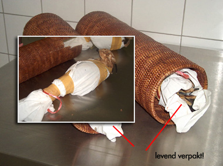

Wansmakelijk
woensdag 20 oktober 2004 | Kommer
In Zaventem heeft men gisterenochtend een Thaise vogelsmokkelaar aangehouden. Tijdens de controle van zijn handbagage ontdekten douaniers twee levende Aziatische Kuifarenden (Spizaetus nipalensis). De manier waarop hij de roofvogels vervoerde, tart elke verbeelding. Met behulp van kleefband waren ze stevig ingepakt in een witte doek — alsof het mummies waren — en in tenen kokers verstopt. Alleen de kop van de vogels was zichtbaar. De douaniers hadden alle moeite om de dieren uit de kokers te bevrijden, zodat een speciale tang er aan te pas kwam. (Bron: Vogelbescherming Vlaanderen)

df op 21 oktober 2004
tenen kokers?